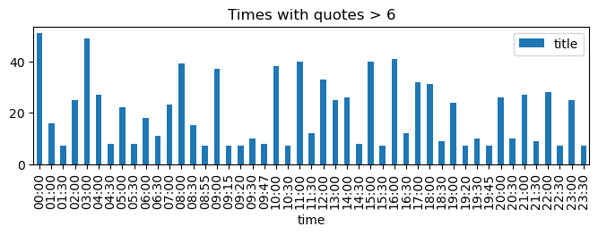

A raspberry pi project, inspired by tjaap. This python notebook is looking at the basics - how to get the data, parse it, display a quote, then moves on to create a repo and put the code onto the actual hardware.
The primary source for quotes is the guardian’s user provided list. This list is incomplete, and the guardian put up a bigger list in 2014 as a gsheet but thats no longer avaiable, so I found a more complete quotes list on github.
First up, making a list of times to check for missing times:
# a list containiner all 1,440 timestimes = [f"{hour:02}:{minute:02}"for hour inrange(24) for minute inrange(60)]assertlen(times) ==60*24# check for all 1,440 clock timesprint(times[55:65]) # check it looks good
I initial looked at the list of quotes on the guardian website from 2011, but that was really incomplete, so after some internet kungfu I moved on to a better list of quotes maintained here.
That project already implements a literary clock, but ignoring that to make my own, here goes:
missing_times = [time for time in times if time notin df.time.values]print(f"{len(missing_times)} time values missing: {missing_times}")single_quote =sum(df.groupby("time").count().title ==1)multiple_quotes =sum(df.groupby("time").count().title >1)print(f"\n{single_quote} times have exactly 1 quote, {multiple_quotes} times have more than 1 quote.")ax = ( df[["time", "title"]] .groupby("time") .count()[df.groupby("time").count().title >6] .plot.bar(title="Times with quotes > 6", figsize=(8, 2)))
21 time values missing: ['02:49', '03:24', '06:03', '06:07', '06:18', '06:47', '07:41', '08:21', '10:28', '11:16', '11:46', '12:31', '13:19', '13:36', '14:23', '15:31', '17:46', '18:14', '18:44', '21:06', '21:14']
886 times have exactly 1 quote, 533 times have more than 1 quote.

So we now have a dataframe full of quotes. I’ll deal with the 21 missing quotes later.
The gthub repo produced a folder full of json files, one for each time stamp, so I could just re-use that, but whats the fun of that.
Spliting up quotes
Ideally, we want the current time in the quote highlighted. The csv file has a col annot which is the time part of the quote string. Initially I tried to use regex to split the string, but since the time is in so many different formats it has to be done manually, hence the annot col.
The time can contain special characters like [] so re.escape fixes that. I had to use re.split instead of str.split here as only re.split has a ignorecase feature.
def split_quote(row):"""adds a prefix and suffix to the quote.""" prefix, suffix = re.split( re.escape(row.annot), row.quote, maxsplit=1, flags=re.IGNORECASE ) row["prefix"] = prefix row["suffix"] = suffixreturn rowdf = df.apply(split_quote, axis=1)df.sample(3)
time
annot
quote
title
author
nsfw
prefix
suffix
2453
19:00
seven o’clock
“Yes, seven o’clock. I will bring dessert.” Sm...
The Catacombs
Jeremy Bates
unknown
“Yes,
. I will bring dessert.” Smiling in her sad-ha...
612
05:00
five in the morning
I did Danièle’s math in my head. “If we start ...
The Catacombs
Jeremy Bates
unknown
I did Danièle’s math in my head. “If we start ...
. Seven hours back, it won’t be noon until we ...
685
05:42
eighteen minutes to six
At eighteen minutes to six, they blew the wall...
A Gentleman's Game
Greg Rucka
sfw
At
, they blew the wall, and even then, it was al...
I can now display the quote with the time highlighted, an example below in markdown format:
'It was **half-past twelve** when I returned to the Albany as a last desperate resort. The scene of my disaster was much as I had left it. The baccarat-counters still strewed the table, with the empty glasses and the loaded ash-trays. A window had been opened to let the smoke out, and was letting in the fog instead.'
Saving quotes to disk
First up, saving a single json object containing all the quotes, which is easy to use:
# returns a string representing the jsonquotes_json = df.groupby("time").agg(list).to_json(orient="index")# writes the json to diskdf.groupby("time").agg(list).to_json("quotes.json", orient="index", compression=None)# read the quotes from diskwithopen("quotes.json", "r") as f: quotes = json.load(f)print(f"{len(quotes):,} keys which look like: {list(quotes.keys())[40:44]}")quotes["01:40"]
1,419 keys which look like: ['00:40', '00:41', '00:42', '00:43']
{'annot': ['one-forty am'],
'quote': ['March twelfth, one-forty am, she leaves a group of drinking buddies to catch a bus home. She never makes it.'],
'title': ['Bones to Ashes'],
'author': ['Kathy Reichs'],
'nsfw': ['unknown'],
'prefix': ['March twelfth, '],
'suffix': [', she leaves a group of drinking buddies to catch a bus home. She never makes it.']}
Save each minute as a seperate file
I’m using a raspberry pi pico w, it doesn’t have enough memory to contain the ~2k quotes. So I’m going to write a json file for every minute, and open and close each file as needed.
I’m keeping only the columns needed to save on diskspace:
for key in df.time.unique(): df[["time", "annot", "prefix", "suffix", "title", "author"]].query("time==@key" ).groupby("time").agg(list).to_json(f"quotes/{key}.json", orient="index")# Checking the total size of the many quote filesquotes_size = (sum([os.path.getsize(f"quotes/{f}") for f in os.listdir("quotes")]) /10**3)f"{len(os.listdir('quotes')):,} json files total {quotes_size:.2f}kb"
'1,419 json files total 931.76kb'
I can compress these to save further on space, which I’ll get to later if needed. Its nice to have a human readable json string rather than a binary object on the pico for future poking around.
Get current time and display quote
Micropython has a time module, which is a subset of the built in python time library. The pi’s clock needs to be synced on boot with a timeserver, leaving that for the future…
Right now, I get the current time, than open the json file for that timestamp, select a random quote from it and return it.
def get_time():"""returns current time in 00:00 format""" time_now = time.localtime()returnf"{time_now.tm_hour}:{time_now.tm_min}"def get_quote(time_str=None):"""returns a dict containing a single quote for a given time"""if time_str isNone: time_str = get_time()# open json filewithopen(f"quotes/{time_str}.json", "r") as f: quote = json.load(f)[time_str] i = random.randint(0, len(quote["title"]) -1)return {key: quote[key][i] for key in quote.keys()}quote = get_quote()print(f"quote dict keys: {quote.keys()}")print(f"\n{quote['prefix']}**{quote['annot']}**{quote['suffix']}")f"{quote['title']} by {quote['author']}"
quote dict keys: dict_keys(['annot', 'prefix', 'suffix', 'title', 'author'])
It was now **eight minutes to eleven**, and he began to feel rather cross and impatient. There was nothing to do in the big, ugly, stately room into which he had been shown.
'From Out of the Vasty Deep by Marie Belloc Lowndes'
That seems to be working well, so now I should be able to assemble the pieces and display this on a raspberry pico display.
Raspberry Pi Pico
Allright, now that I have the basics ready to go, here goes putting this on a pi pico. First up, we need a github repo.
Misc
Things not needed anymore, left in case they are useful in the future.
Guardian quotes from 2011
Guardian clock quotes from 2011, left below as a pandas exercise in fetching a table from a html page and some basic transformations to be able to use it.
clock_url ="https://www.theguardian.com/books/table/2011/apr/21/literary-clock"df_quotes = ( pd.read_html(clock_url)[0] # get first table .rename( columns={"Time of quote": "time","Quote": "quote","Title of book": "title","Author": "author", } ) .sort_values(by="time") .drop(columns=["Your username"]) # no need for this col .dropna(subset=["quote"]) # drop blank rows at end)# fix some wonky time stringsdf_quotes.time = df_quotes.time.str.replace(".", ":")print(f"{df_quotes.shape} quotes, so missing a lot!")df_quotes.sample(2)
(935, 4) quotes, so missing a lot!
time
quote
title
author
204
07:10:00h
A search in Bradshaw informed me that a train ...
The 39 Steps
John Buchan
409
11:15:00h
The first time I saw them it was around eleven...
Where I'm Calling From
Raymond Carver
There is a 2014 Guardlian list, but looks like that was a google sheet which they have now taken down.